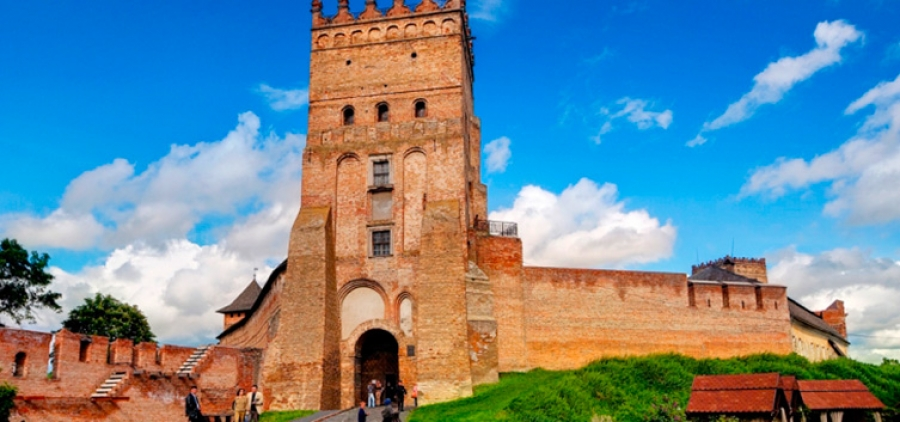
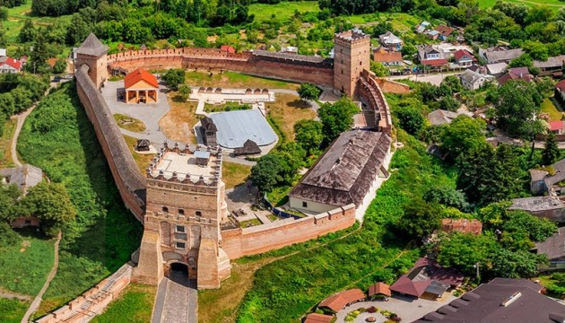

Луцький Замок (Замок Любарта)
Волинь здавна притягувала до себе натовпи подорожуючих, завойовників, неодноразовими були візити до цього краю князів, імператорів та сучасних президентів, а певний час центр місцини – Луцьк (колись носив назву Лучеськ) був у власності володарів Великого князівства Литовського
В чому ж секрет цієї лісистої території, дорогі відвідувачі нашого сайту? Продовжуючи цикл розповідей про замки України в рамках подорожей Карпатами, сьогодні гостем буде Верхній замок у Луцьку, також відомий як Замок Любарта. Кожен українець вже бачив його – саме він зображений на двухсотгривневій купюрі. Проте, краще ж побачити вживу, чи не так?

Цікаві факти про Луцький замок
- Замок Любарта – це також місце цікавого автографу. На одній із цеглин його мурів можна побачити підпис сестри Лесі Українки, Ольги Косач.
- Луцький замок є одним з найдавніших замків України, який добре зберігся.
- Замок Любарта відомий з вигляду майже всім. Річ в тім, що В'їзна вежа зображена на звороті банкноти номіналом в 200 гривень.
- У 2011 році за підсумками голосуванням «Сім чудес України» Верхній замок посів перше місце.
- Унікальний дзвін 1647 року, який розташовується у замку. Він зумів оминути гірку долю своїх побратимів, оскільки дзвони у період Національно-визвольної війни були переплавлені у гармати. Тому він – сучасник самого Богдана Хмельницького. Також це єдиний дзвін, що був вилитий власноручно майстром за унікальною та неповторною технологією.
- Знаменита замкова канцелярія створила і зберегла для України понад мільйон документів з її історії. Свого часу в ній працював і майбутній гетьман України Іван Виговський.
Як дістатись до Луцького замку
Адреса: вул Кафедральна, 1A, Луцьк, Волинська область
Телефон для довідок: 0332 724 588.
Режим роботи: з пн. по нд. з 10.00 до 19.00.
У вартість вхідного білету входить можливість побувати в «свічковій майстерні», «музею книги», а також походити по периметру замку. За всі інші локації і музеї, зокрема вхід у В’їзну вежу, треба сплачувати окремо.
Поруч з замком розташована велика парковка для авто та ресторан «Корона Вітовта».